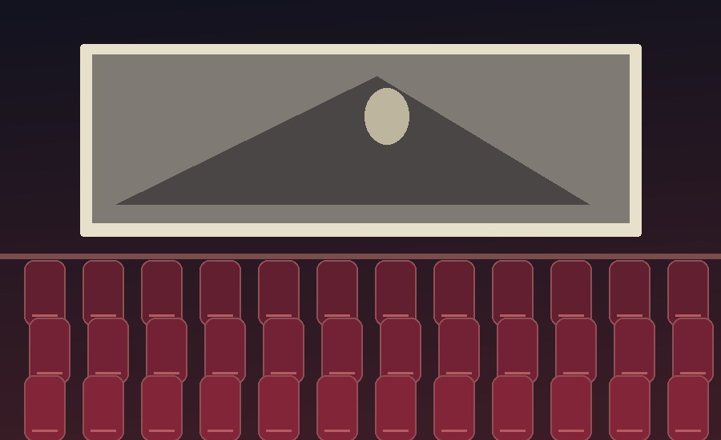
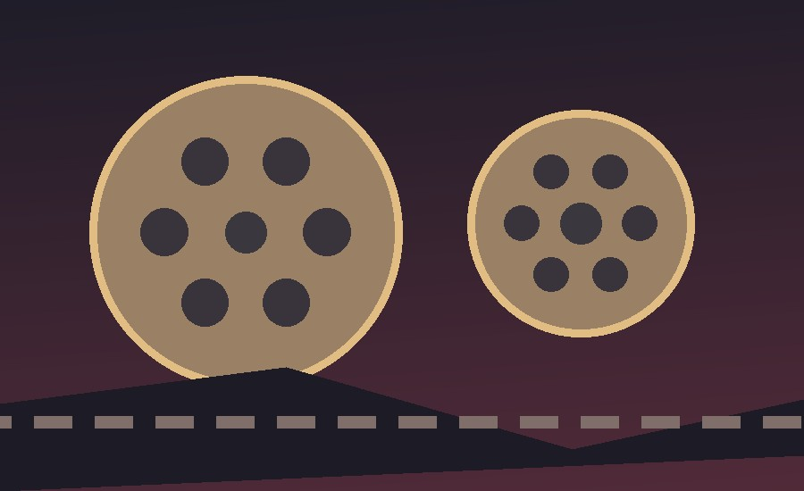

Галерея: атмосфера кино
На этой странице собраны учебные иллюстрации объектов и образов, связанных с психологическими триллерами.
Все изображения Большая картинка Объяснения
Иллюстрации


Открыть большое изображение
Нажмите на миниатюру шириной 90 пикселей. В новой вкладке появится изображение размером 600 на 400 пикселей, расположенное по центру.
Миниатюра ведёт на отдельную страницу с большим изображением.
Об изображениях
Эти иллюстрации изготовлены специально для учебного сайта. Они помогают показать объекты, часто связанные с атмосферой триллеров, без использования официальных киноафиш.